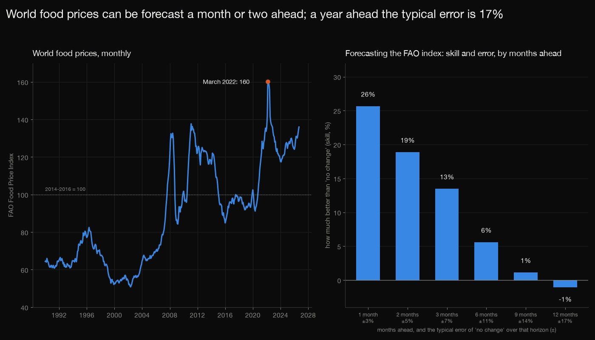
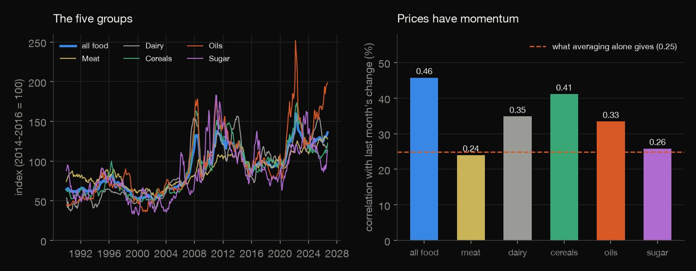
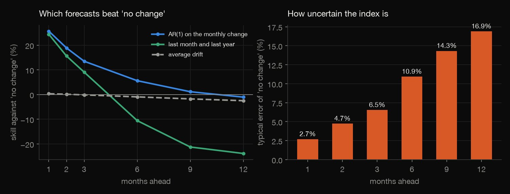
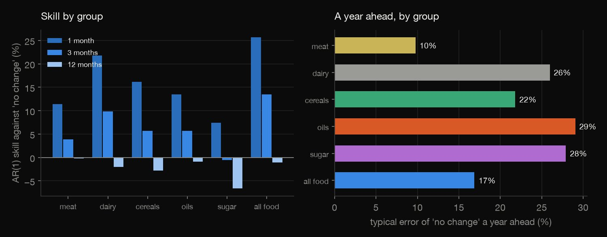
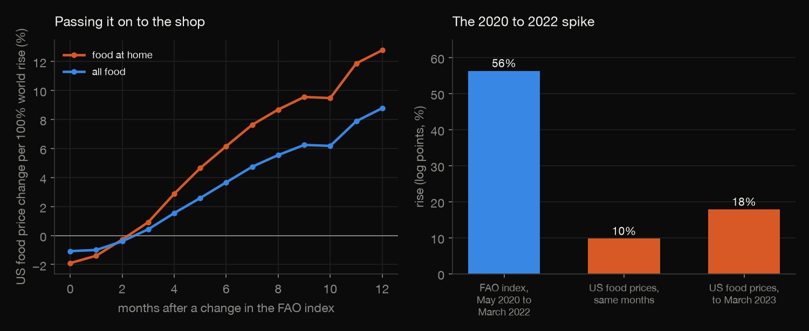
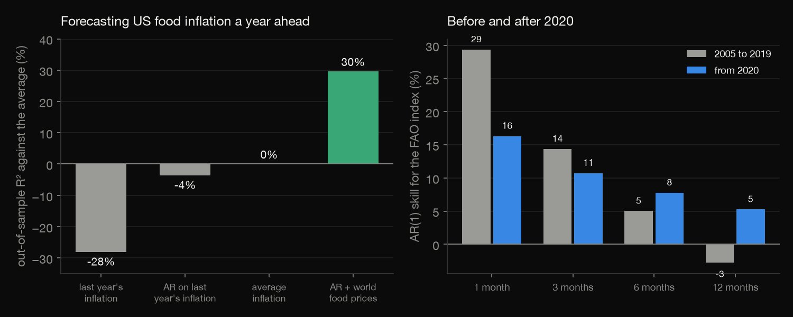

Python · Forecasting · 2026-10
How Far Ahead Can World Food Prices Be Forecast?
The FAO Food Price Index can be forecast 26% better than 'no change' one month ahead, 13% three months ahead and not at all a year ahead, when the typical error is 17%; yet it improves the forecast of US food inflation a year ahead (R² 30% against -4% without it).

Forecasts of an index built from export price quotations (re-based in 2020), not of any one market; nothing about supply, weather, energy or policy was used. The evaluation starts in 2005 and its overlapping origins rest on a few price episodes (2007 to 2008, 2010 to 2011, 2021 to 2022). The pass-through regression has no controls, and the October 2025 US CPI was never published (the gap is skipped). Sources: FAO Food Price Index (CC BY 4.0 under FAO's statistical database terms, with additional terms) and FRED (US Bureau of Labor Statistics).
01 — The problem
Food prices spike and fall, and plans (budgets, imports, food aid) are made months ahead. How far ahead can the world food price index be forecast better than by assuming it stays where it is, and does it help forecast what US shoppers will pay?
The task follows GeeksforGeeks' "Food Price Forecasting". The data is the FAO Food Price Index since 1990 with its five groups, and the US consumer price indices for food, with every forecast made only from the months before it.
02 — What I built
One index, tested five ways:
- The audit: months, gaps, the base period, and the missing October 2025 US price index.
- The forecasts: "no change", drift, an AR(1) and a momentum regression, 1 to 12 months ahead, from 2005.
- The groups and the 2020s: meat, dairy, cereals, oils and sugar, before and after 2020.
- The pass-through: a 12-month distributed lag from world prices to US food prices, and the 2020 to 2022 spike.
- Check:
check.pyrecounts all 353 numbers in plain Python, with no data or statistics library.
03 — How it was built
- 01
Download the index and the shop prices
The FAO Food Price Index (monthly since 1990, with its five groups; CC BY 4.0 under FAO's database terms) and three FRED series of US consumer food prices (about 0.10 MB, fetched and never committed, with their checksums). FAO refuses the default Python request header and FRED stalls on a custom one, so each gets the header it accepts.
FILES = {"food_price_indices_data.csv": "https://www.fao.org/media/docs/worldfoodsituationlibraries/wfs-library/food_price_indices_data.csv?download=true"} - 02
Forecast from the past only
Every month from January 2005, each model is refitted on the months up to then and forecasts the change of the log index over the next 1 to 12 months: no change, the average drift, an AR(1) on the monthly change (iterated h months), and a regression on last month's and last year's change.
c0, ph = ols(dd[s - 1][:, None], dd[s])[0]; m_ = c0 / (1 - ph); fc = sum(m_ + ph ** j * (dd[t] - m_) for j in range(1, h + 1)) - 03
Score against 'no change'
Skill is one minus the ratio of mean squared errors to the naive forecast's, with a Diebold-Mariano test (Bartlett weights, h-1 lags) of whether a model's gain could be chance.
row = {"horizon": h, "method": m, "n": len(e), "rmse": float(np.sqrt((e ** 2).mean())), "skill_vs_naive": 1 - float((e ** 2).sum() / (en ** 2).sum())} - 04
Measure the pass-through
The monthly log change of US food prices is regressed on the FAO index's change this month and the 12 months before; the cumulative sum of the 13 coefficients is the pass-through, with its Newey-West standard error from the full covariance matrix.
b, inv, e, Xa = ols(df[[f"x{k}" for k in range(LAGS_PT + 1)]].to_numpy(), df["y"].to_numpy()); V = hac_cov(Xa, e, inv, LAGS_PT) - 05
Recount it all without the libraries
check.pyreads the files with the csv module and recomputes every rolling-origin forecast, score, test, regression and standard error, solving each fit by Gauss-Jordan elimination: 353 numbers to a relative tolerance of 1e-8.c0, ph = ols([[dd[i - 1]] for i in s], [dd[i] for i in s])[0][:2]; m_ = c0 / (1 - ph)
04 — Results
The index. 441 months, January 1990 to September 2026. It peaked at 160 in March 2022 and was lowest, at 51, in May 2002. The table gives, for the whole index and each group, the volatility a year, the Momentum (the correlation of a month's change with the last month's; averaging a random walk over a month would give 0.25 by itself) and the Error of "no change" a year ahead.
| Group | Volatility | Momentum | Error |
|---|---|---|---|
| All food | 8% | 0.46 | 17% |
| Meat | 8% | 0.24 | 10% |
| Dairy | 14% | 0.35 | 26% |
| Cereals | 13% | 0.41 | 22% |
| Oils | 19% | 0.33 | 29% |
| Sugar | 24% | 0.26 | 28% |

A month or two ahead, yes; a year ahead, no. Every month from January 2005, using only the months before, the change of the log index over the next h months is forecast four ways. In the table, Error is the root-mean-square error of "no change", and AR(1) and Momentum are the skill against it (one minus the ratio of mean squared errors). The AR(1) of the monthly change beats "no change" by 26% one month ahead (Diebold-Mariano p = 0.001), 13% at three months (p = 0.03) and nothing from six months on; the average drift never helps and the momentum regression is worse than "no change" beyond three months.
| Months | Error | AR(1) | Momentum |
|---|---|---|---|
| 1 | 2.7% | 26% | 24% |
| 2 | 4.7% | 19% | 16% |
| 3 | 6.5% | 13% | 9% |
| 6 | 10.9% | 6% | -11% |
| 9 | 14.3% | 1% | -21% |
| 12 | 16.9% | -1% | -24% |

The error grows with the horizon, and the groups differ in size, not in kind. The error of "no change" is 2.7% at one month and 16.9% at twelve, and no forecast here reduces it at twelve. At one month the AR(1) skill is 11% for meat, 22% for dairy, 16% for cereals, 13% for oils and 7% for sugar, and within 7 points of zero for all of them at twelve. From 2020 on the skill is 16%, 11%, 8% and 5% at 1, 3, 6 and 12 months (before 2020: 29%, 14%, 5%, -3%), on only 69 twelve-month origins.

Little of a world price rise reaches the shop, slowly. A 100% rise in the FAO index goes with a rise of 8.8% in US food prices over the same month and the twelve after (standard error 2.0) and of 12.8% in food at home; 42% of it comes within six months, and the index explains 24% of the monthly variation. The 2020 to 2022 episode was larger: the index rose 56% (log points) from May 2020 to March 2022, US food prices 10% over the same months and 18% by twelve months after the peak, as energy, labour and general inflation moved too.

Yet the world index helps forecast US food inflation. The table scores forecasts of the next twelve months' US food inflation over 247 months, refitted each month: R² is the out-of-sample R-squared against the average inflation so far and Error the root-mean-square error. Last year's inflation alone does not beat the average; adding the FAO index's last twelve months' change lifts the R² to 30%, better than the model without it at p = 0.014 (Diebold-Mariano).
| Forecast | R² | Error |
|---|---|---|
| Average | 0% | 2.3% |
| Repeat last year | -28% | 2.6% |
| AR | -4% | 2.4% |
| AR + world index | 30% | 1.9% |

05 — What I'd do next
- Add what moves the index (energy prices, weather, stocks-to-use, the dollar) as predictors, and see whether any beat "no change" beyond three months.
- Use national food price indices for other countries, to see whether the pass-through of 9% is an American feature.
- Forecast the spread of the possible index values (a fan chart) rather than a single number, since a 17% error a year ahead is the real message.